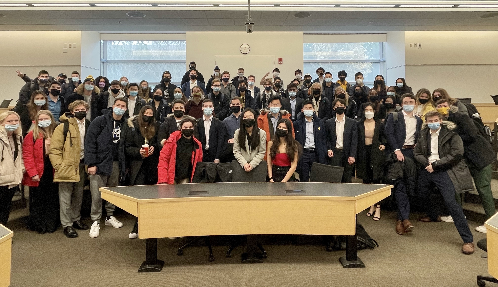

|
Teaching
Instructor: BBA Core
|
 |
TO 313: Operations Management (BBA core), Fall 2021
Teaching evaluation: 4.9/5.0 (class size: 75)
Role: Lectured twice a week (1.5 hours each); held weekly office hours; designed and implemented in-class activities; guided team projects; co-developed exams and course materials
Topics: Process analysis, waiting time analysis, inventory management, project management,
supply chain management and sustainability, demand forecasting, and revenue management
|
Assist for MBA, EMBA, and PhD-level courses
Instructional Support Specialist, MBA/EMBA courses
TO 534: Introduction to Operations, Summer 2022
EMBA 610: Managerial Big Data Analytics, Summer 2022
Online Executive Education: Value Driven Thinking, Spring 2022
EMBA Quantitative Skills Workshop, Summer 2021
Business Analytics and Statistics for Executives, Fall 2020
Teaching Assistant
TO 593: Operations Management (Global MBA), Summer 2023
TO 899: T&O PhD Seminar: Inventory Theory, Fall 2022
TO 421: Logistics, Winter 2021
TO 618: Applied Business Analytics and Decisions, Fall 2020
TO 605: Manufacturing and Supply Operations, Fall 2019, Winter 2020
|